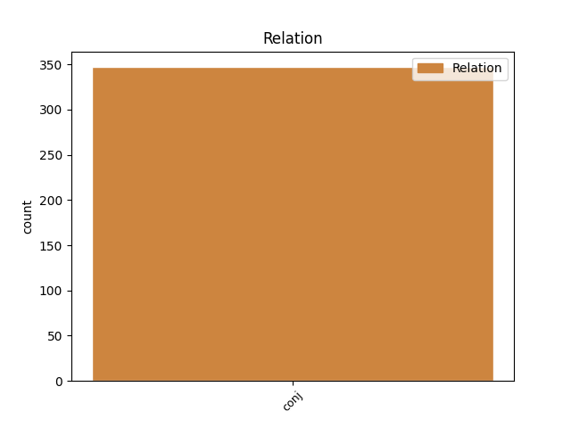
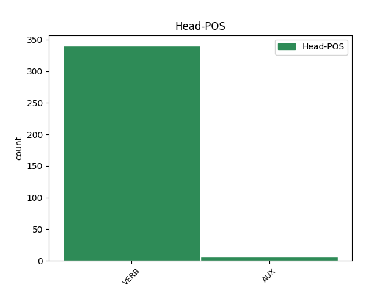
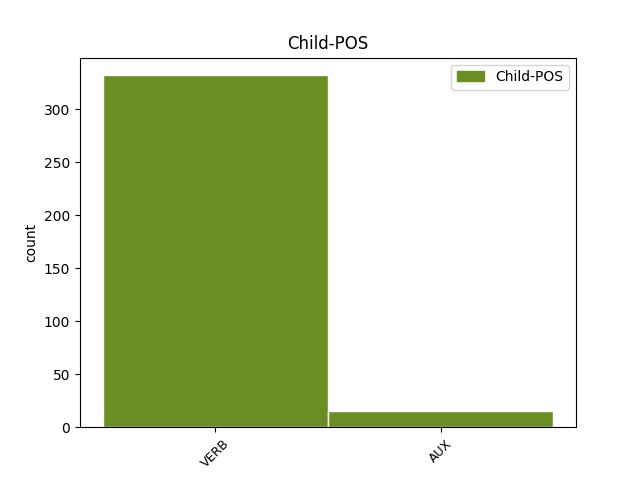

Distribution of features within this leaf



Agreement Rules sorted by frequency.
- When the dependent token is the conjunct(conj) of the head token,
1 Перед _ _ _ _ 0 _ _ _
2 сеансом _ _ _ _ 0 _ _ _
3 на _ _ _ _ 0 _ _ _
4 Гороховой _ _ _ _ 0 _ _ _
5 присели _ _ _ _ 0 _ _ _
6 у _ _ _ _ 0 _ _ _
7 раскрытого _ _ _ _ 0 _ _ _
8 окна _ _ _ _ 0 _ _ _
9 в _ _ _ _ 0 _ _ _
10 кофейном _ _ _ _ 0 _ _ _
11 кафе _ _ _ _ 0 _ _ _
12 , _ _ _ _ 0 _ _ _
13 заказали заказать VERB _ Aspect=Perf|Mood=Ind|Number=Plur|Tense=Past|VerbForm=Fin|Voice=Act 0 _ _ _
14 фалафель _ _ _ _ 0 _ _ _
15 и _ _ _ _ 0 _ _ _
16 донер _ _ _ _ 0 _ _ _
17 , _ _ _ _ 0 _ _ _
18 стали стать VERB _ Aspect=Perf|Mood=Ind|Number=Plur|Tense=Past|VerbForm=Fin|Voice=Act 13 conj _ _
19 обсуждать _ _ _ _ 0 _ _ _
20 пиво _ _ _ _ 0 _ _ _
21 . _ _ _ _ 0 _ _ _
Disagree Examples:
1 Запретит запретить VERB _ Aspect=Perf|Mood=Ind|Number=Sing|Person=3|Tense=Fut|VerbForm=Fin|Voice=Act 0 _ _ _
2 , _ _ _ _ 0 _ _ _
3 и _ _ _ _ 0 _ _ _
4 ты _ _ _ _ 0 _ _ _
5 будешь быть AUX _ Aspect=Imp|Mood=Ind|Number=Sing|Person=2|Tense=Pres|VerbForm=Fin|Voice=Act 1 conj _ _
6 его _ _ _ _ 0 _ _ _
7 слушаться _ _ _ _ 0 _ _ _
8 . _ _ _ _ 0 _ _ _
1 Чтобы _ _ _ _ 0 _ _ _
2 вёрсты _ _ _ _ 0 _ _ _
3 не _ _ _ _ 0 _ _ _
4 мерить _ _ _ _ 0 _ _ _
5 и _ _ _ _ 0 _ _ _
6 Судьбе _ _ _ _ 0 _ _ _
7 не _ _ _ _ 0 _ _ _
8 пенять _ _ _ _ 0 _ _ _
9 , _ _ _ _ 0 _ _ _
10 Мне _ _ _ _ 0 _ _ _
11 довольно _ _ _ _ 0 _ _ _
12 поверить _ _ _ _ 0 _ _ _
13 и _ _ _ _ 0 _ _ _
14 взаправду _ _ _ _ 0 _ _ _
15 понять _ _ _ _ 0 _ _ _
16 , _ _ _ _ 0 _ _ _
17 — _ _ _ _ 0 _ _ _
18 За _ _ _ _ 0 _ _ _
19 неведомой _ _ _ _ 0 _ _ _
20 далью _ _ _ _ 0 _ _ _
21 в _ _ _ _ 0 _ _ _
22 чужеземном _ _ _ _ 0 _ _ _
23 лесу _ _ _ _ 0 _ _ _
24 Блещет _ _ _ _ 0 _ _ _
25 таволга _ _ _ _ 0 _ _ _
26 сталью _ _ _ _ 0 _ _ _
27 на _ _ _ _ 0 _ _ _
28 озерном _ _ _ _ 0 _ _ _
29 плесу _ _ _ _ 0 _ _ _
30 , _ _ _ _ 0 _ _ _
31 Слышны _ _ _ _ 0 _ _ _
32 тайные _ _ _ _ 0 _ _ _
33 клики _ _ _ _ 0 _ _ _
34 , _ _ _ _ 0 _ _ _
35 звон _ _ _ _ 0 _ _ _
36 нездешних _ _ _ _ 0 _ _ _
37 мечей _ _ _ _ 0 _ _ _
38 , _ _ _ _ 0 _ _ _
39 Из _ _ _ _ 0 _ _ _
40 камней _ _ _ _ 0 _ _ _
41 среброликих _ _ _ _ 0 _ _ _
42 бьет _ _ _ _ 0 _ _ _
43 упрямый _ _ _ _ 0 _ _ _
44 ручей _ _ _ _ 0 _ _ _
45 , _ _ _ _ 0 _ _ _
46 Со _ _ _ _ 0 _ _ _
47 слезами _ _ _ _ 0 _ _ _
48 не _ _ _ _ 0 _ _ _
49 смешан смешать VERB _ Aspect=Perf|Gender=Masc|Number=Sing|Tense=Past|Variant=Short|VerbForm=Part|Voice=Pass 0 _ _ _
50 , _ _ _ _ 0 _ _ _
51 Высшей _ _ _ _ 0 _ _ _
52 силой _ _ _ _ 0 _ _ _
53 храним хранить VERB _ Aspect=Perf|Gender=Masc|Number=Sing|Tense=Pres|Variant=Short|VerbForm=Part|Voice=Pass 49 conj _ SpaceAfter=No
54 . _ _ _ _ 0 _ _ _
1 " _ _ _ _ 0 _ _ _
2 В _ _ _ _ 0 _ _ _
3 настоящее _ _ _ _ 0 _ _ _
4 время _ _ _ _ 0 _ _ _
5 обвиняемый _ _ _ _ 0 _ _ _
6 и _ _ _ _ 0 _ _ _
7 потерпевшие _ _ _ _ 0 _ _ _
8 уведомлены уведомить VERB _ Aspect=Perf|Number=Plur|Tense=Past|Variant=Short|VerbForm=Part|Voice=Pass 0 _ _ _
9 об _ _ _ _ 0 _ _ _
10 окончании _ _ _ _ 0 _ _ _
11 следственных _ _ _ _ 0 _ _ _
12 действий _ _ _ _ 0 _ _ _
13 , _ _ _ _ 0 _ _ _
14 и _ _ _ _ 0 _ _ _
15 в _ _ _ _ 0 _ _ _
16 ближайшее _ _ _ _ 0 _ _ _
17 время _ _ _ _ 0 _ _ _
18 приступят приступить VERB _ Aspect=Perf|Mood=Ind|Number=Plur|Person=3|Tense=Fut|VerbForm=Fin|Voice=Act 8 conj _ _
19 к _ _ _ _ 0 _ _ _
20 процессу _ _ _ _ 0 _ _ _
21 ознакомления _ _ _ _ 0 _ _ _
22 с _ _ _ _ 0 _ _ _
23 материалами _ _ _ _ 0 _ _ _
24 уголовного _ _ _ _ 0 _ _ _
25 дела _ _ _ _ 0 _ _ _
26 " _ _ _ _ 0 _ _ _
27 , _ _ _ _ 0 _ _ _
28 - _ _ _ _ 0 _ _ _
29 сказал _ _ _ _ 0 _ _ _
30 Маркин _ _ _ _ 0 _ _ _
31 . _ _ _ _ 0 _ _ _
1 Гражданской _ _ _ _ 0 _ _ _
2 силе _ _ _ _ 0 _ _ _
3 чем-то _ _ _ _ 0 _ _ _
4 бабушки _ _ _ _ 0 _ _ _
5 у _ _ _ _ 0 _ _ _
6 дорог _ _ _ _ 0 _ _ _
7 не _ _ _ _ 0 _ _ _
8 угодили угодить VERB _ Aspect=Imp|Mood=Ind|Number=Plur|Tense=Past|VerbForm=Fin|Voice=Act 0 _ _ _
9 , _ _ _ _ 0 _ _ _
10 хотят хотеть VERB _ Aspect=Imp|Mood=Ind|Number=Plur|Person=3|Tense=Pres|VerbForm=Fin|Voice=Act 8 conj _ _
11 их _ _ _ _ 0 _ _ _
12 гнать _ _ _ _ 0 _ _ _
13 Тема _ _ _ _ 0 _ _ _
14 - _ _ _ _ 0 _ _ _
15 Дорожная _ _ _ _ 0 _ _ _
16 Инфраструктура _ _ _ _ 0 _ _ _
17 точно _ _ _ _ 0 _ _ _
18 не _ _ _ _ 0 _ _ _
19 в _ _ _ _ 0 _ _ _
20 компетентности _ _ _ _ 0 _ _ _
21 партии _ _ _ _ 0 _ _ _
22 Гражданская _ _ _ _ 0 _ _ _
23 сила _ _ _ _ 0 _ _ _
24 С _ _ _ _ 0 _ _ _
25 Чугуновым _ _ _ _ 0 _ _ _
26 из _ _ _ _ 0 _ _ _
27 некой _ _ _ _ 0 _ _ _
28 " _ _ _ _ 0 _ _ _
29 гражданской _ _ _ _ 0 _ _ _
30 силы _ _ _ _ 0 _ _ _
31 " _ _ _ _ 0 _ _ _
32 я _ _ _ _ 0 _ _ _
33 сталкивался _ _ _ _ 0 _ _ _
34 лично _ _ _ _ 0 _ _ _
35 . _ _ _ _ 0 _ _ _
1 У _ _ _ _ 0 _ _ _
2 меня _ _ _ _ 0 _ _ _
3 есть быть AUX _ Aspect=Imp|Mood=Ind|Number=Sing|Person=3|Tense=Pres|VerbForm=Fin|Voice=Act 0 _ _ _
4 на _ _ _ _ 0 _ _ _
5 самокате _ _ _ _ 0 _ _ _
6 , _ _ _ _ 0 _ _ _
7 велосипеде _ _ _ _ 0 _ _ _
8 и _ _ _ _ 0 _ _ _
9 заклеена заклеить VERB _ Aspect=Perf|Gender=Fem|Number=Sing|Tense=Past|Variant=Short|VerbForm=Part|Voice=Pass 3 conj _ _
10 эмблема _ _ _ _ 0 _ _ _
11 ЛДПР _ _ _ _ 0 _ _ _
12 на _ _ _ _ 0 _ _ _
13 халявной _ _ _ _ 0 _ _ _
14 бейсболке _ _ _ _ 0 _ _ _